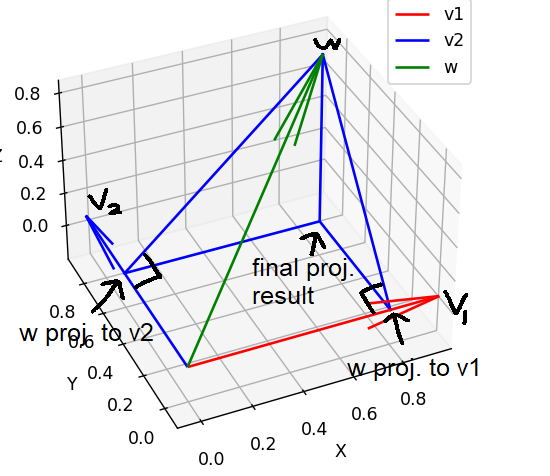
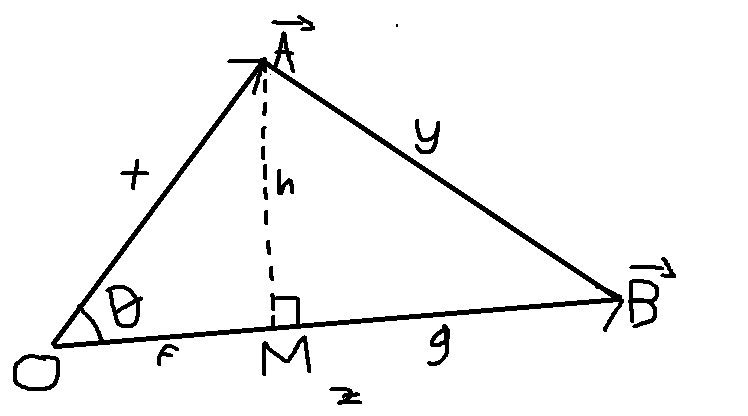
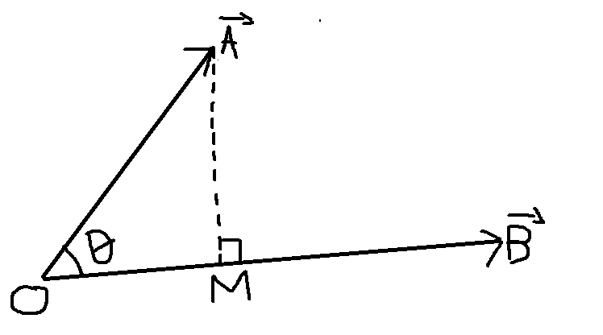

Projecting vectors onto a subspace of R^n
There is a subspace of R^n defined by a list of vectors v_1, v_2, ..., v_m (m < n) which forms an orthonormal basis of a subspace of R^n. The task is to project any given vector w into that subspace. The way I approached this problem was to focus on the n = 3, m = 2 case (projecting a vector onto a plane in 3 dimension) first.
Projecting a vector onto a plane in R^3
Denote the basis of the plane v_1 and v_2 and let them be an orthonormal basis and the vector to be projected is called w. The goal is to find two scalars s_1, s_2 such that s_1*w_1 + s_2*w_2 is the result of the projection. When I say projection, what's really meant by that is that it's a "90 degree projection" or in other words, the line that goes through the projected vector and the original vector is orthogonal to the plane. For some reason, it took me a few hours to realize this, but the way you would do it is that you would project w onto v_1 and the result of that is equal to s_1*v_1 and do the same for v_2. Here's a picture of what I mean:
Also, can someone recommend me a good app for visualizing basic 3D things. I just used matplotlib with heavy help from ChatGPT to make that and it looks awful, of course.
So anyway, the next part will be me explaining dot products and it's projection interpretation. Everyone reading this should already know about it but I am adding this because I am planning to show this to a certain someone I know which have already forgotten everything about math.
Dot products
Suppose there are two vectors A and B that is equal to: $$A = (a_1, a_2, ..., a_n)$$ $$B = (b_1, b_2, ..., b_n)$$Then the dot product is: $$A \cdot B = a_1b_1 + a_2b_2 + ... + a_nb_n = \sum_{i=1}^{n}a_ib_i$$ And there is another inrepretation of the dot product that is a lot more intuitive and that is: $$A \cdot B = |A||B|cos(\theta)$$ where theta is the angle between A and B and |A| is the magnitude of A, which is: $$|A| = \sqrt{\sum_{i=1}^{n}a_i}$$
As a side story, in the middle of writing this, I actually forgot how the proof for this goes. I remember that I have managed to prove it before but I forgot how it went and I kinda panicked. Now I remember though, so here's how the proof goes:
A and B are vectors in n-dimensional euclidean space. Imagine taking a 2-dimensional slice of that space which contains A, B and the origin. Now you can draw A and B in 2 dimensions as follows:
But remember, A and B are still n-dimensional vectors. Even though we have visualized them like this representing their position in the plane slice, it does not mean that A and B are now 2 dimensional vectors in a way where we can actually represent each with their x and y coordinates. So, the only information we know are the magnitude of these vectors
Also, this is actually just 1 possibility, that is a possibility where the vector A is still technically in the same general direction of B, which may not always be the case. In the actual behaviour of dot products, it will return a negative value (which is in line with how the cosine of a rotation higher than 90 is negative) when the vector is pointing on "opposite directions," in other words, M is a B multiplied by a negative scalar. The proof we're going with only covers this case at first, but we'll see how it can still be used the prove the other case at the end.
We know the value of AO, BO, and AB by taking the magnitude of the difference of the vectors A and B. By the definition of cosine, it is known that: $$cos(\theta) = \frac{MO}{AO} = \frac{MO}{|\vec{A}|}$$
substituting that into the previous definition interpretation of dot products, this means that we just need to prove that the dot product of A and B is:
$$A \cdot B = |\vec{A}||\vec{B}|\frac{MO}{|\vec{A}|} = |\vec{B}|MO$$
And if that is the case, then it MUST mean that the dot product is equal to the magnitude of A and the magnitude of B multiplied the cosine of the angle inbetween A and B. The problem now is finding MO, but with a little bit of algebra, you can easily find that.
Definitions based on the image:
$$x = AO, y = AB, z = BO, h = AM, f = MO, g = BM, z = f + g$$
Remember that the goal is to find f using only x, y, z because those are all we know. We have 3 unknowns, f, g, h and we have 3 knowns. The strategy is to create 3 equations and then solve for f, g, and h. The first two equation will be made using pythagoras:
$$
\begin{align}
h^2 &= x^2 - f^2 & \text{(1)} \\
h^2 &= y^2 - g^2 & \text{(2)} \\
z &= f + g & \text{(3)}
\end{align}
$$
Using (1) and (2) you can find:
$$
\begin{align}
f &= \sqrt{x^2 - h^2} & \text{(4)} \\
g &= \sqrt{y^2 - h^2} & \text{(5)}
\end{align}
$$
And then using (4), (5), and (3):
$$
\begin{align}
z &= \sqrt{x^2 - h^2} + \sqrt{y^2 - h^2} \\
z^2 &= x^2 - h^2 + 2\sqrt{(x^2 - h^2)(y^2 - h^2)} + y^2 - h^2 \\
z^2 &= x^2 + y^2 - 2h^2 + 2\sqrt{(x^2 - h^2)(y^2 - h^2)} \\
z^2 - x^2 - y^2 + 2h^2 &= 2\sqrt{(x^2 - h^2)(y^2 - h^2)} \\
(z^2 - x^2 - y^2 + 2h^2)^2 &= 4((x^2 - h^2)(y^2 - h^2))
\end{align}
$$
Yeah, this is gonna get very messy but here goes, the left part first:
$$
z^4 + x^4 + y^4 + 4h^4 - 2x^2z^2 - 2y^2z^2 + 4h^2z^2 + 2x^2y^2 - 4x^2h^2 - 4y^2h^2
$$
The right part:
$$
4(x^2y^2 - h^2(x^2 + y^2) + h^4)
$$
Notice that the end of the expansion of the left side contains a $$ -4h^2(x^2 + y^2) $$ which is also contained on the expansion on the right side, so that part can be safely excluded. Notice that 4h^4 is also included on both sides so that can also be excluded.
$$
\begin{align}
z^4 + x^4 + y^4 - 2x^2z^2 - 2y^2z^2 + 4h^2z^2 + 2x^2y^2 &= 4x^2y^2 \\
(x^2 + y^2 - z^2)^2 + 4h^2z^2 &= 4x^2y^2 \\
h^2 &= \frac{4x^2y^2 - (x^2 + y^2 - z^2)^2}{4z^2} \\
h &= \frac{\sqrt{4x^2y^2 - (x^2 + y^2 - z^2)^2}}{2z} \\
\end{align}$$
Which is actually correct! Check this desmos link. That was still really annoying though. This is just one of those things anyone that knows a bit of algebra could do but it's also really tedious.
Next is to find what OM is. This can be done using pythagoras:
$$
\begin{align}
f^2 &= x^2 - h^2 \\
f^2 &= \frac{4x^2z^2 - 4x^2y^2 + (x^2 + y^2 - z^2)^2}{4z^2} \\
f^2 &= \frac{4x^2z^2 - 4x^2y^2 + (z^4 + x^4 + y^4 - 2x^2z^2 - 2y^2z^2 + 2x^2y^2)}{4z^2} \\
f^2 &= \frac{2x^2z^2 - 2x^2y^2 + z^4 + x^4 + y^4 - 2y^2z^2}{4z^2} \\
f^2 &= \frac{(x^2 - y^2 + z^2)^2}{4z^2} \\
f &= \frac{(x^2 - y^2 + z^2)}{2z}
\end{align}
$$
Again, it's correct. Check desmos link
Now to prove that:
$$
A \cdot B = zf = \frac{(x^2 - y^2 + z^2)}{2}
$$
It is known that:
$$
\begin{align}
A \cdot B = \sum_{i=1}^{n} a_ib_i \\
x = |\vec{A}| = \sqrt{\sum_{i=1}^{n} a_i^2} \\
z = |\vec{B}| = \sqrt{\sum_{i=1}^{n} b_i^2} \\
y = |\vec{B - A}| = \sqrt{\sum_{i=1}^{n} (b_i - a_i)^2}
\end{align}
$$
Going back to zf using the sums:
$$
\begin{align}
zf &= \frac{\sum_{i=1}^{n} a_i^2 - \sum_{i=1}^{n} (b_i - a_i)^2 + \sum_{i=1}^{n} b_i^2}{2} \\
zf &= \frac{\sum_{i=1}^{n} (a_i^2 - (b_i - a_i)^2 + b_i^2)}{2} \\
zf &= \frac{\sum_{i=1}^{n} (a_i^2 - (b_i^2 - 2a_ib_i + a_i^2) + b_i^2)}{2} \\
zf &= \frac{\sum_{i=1}^{n} (a_i^2 - b_i^2 + 2a_ib_i - a_i^2 + b_i^2)}{2} \\
zf &= \frac{\sum_{i=1}^{n} 2a_ib_i}{2} \\
zf &= \sum_{i=1}^{n} a_ib_i = A \cdot B
\end{align}
$$
And there we go, we have proved that the dot product of A is equal to zf or the length of the result of the projection from A to B times the magnitude of B
And earlier, we have proved that if that is true, then the dot product MUST be equal to the magnitude of A times the magnitude of B times the cosine of the angle between them
I'm still quite surprised that the result ended up being the exact same as the dot product though lol. I really expected it to be something different because we have technically only proved it for 1 case out of two.
Next time, I'll investigate more into why this proof actually also works for the other case. Check this desmos link and move A to B so that they're in opposite directions and see that the resulting F is negative.
Vector projections
Suppose there's the vector A and B, and we want to project A to B and denote the result M, as shown in the image below (excuse my bad drawing, yes I drew that manually for some reason.):
The goal here is to find the vector M.
Definitions: $$|\vec{A}| = AO, |\vec{M}| = MO$$ Observation: $$cos(\theta) = \frac{MO}{AO} = \frac{|\vec{M}|}{|\vec{A}|}$$ Which, by doing a bit of algebra on the previous expression, means: $$|\vec{M}| = |\vec{A}|cos(\theta)$$ We know that: $$\vec{M} = \frac{\vec{B}}{|\vec{B}|}|\vec{M}| = \frac{\vec{B}}{|\vec{B}|}|\vec{A}|cos(\theta)$$
But then, using dot products, we know: $$A \cdot B = |\vec{A}||\vec{B}|cos(\theta)$$ Which means: $$\frac{\vec{B}}{|\vec{B}|}|\vec{A}|cos(\theta) = \frac{A \cdot B}{|\vec{B}|^2}\vec{B}$$ And that is the formula to get the projection vector when projecting from A to B
Going back to the original task... So this was the image from before:
Let's call w projected to v_1 as p_1 and w projected to v_2 as p_2, then based on the formula for projections, we get:
$$ p_1 = \frac{w \cdot v_1}{|\vec{v_1}|^2}v_1 = (w \cdot v_1)v_1$$ $$ p_2 = \frac{w \cdot v_2}{|\vec{v_2}|^2}v_2 = (w \cdot v_2)v_2$$ The reason for the final part is because the magnitude of v_1 and v_2 is 1 anyway, so it being squared is just 1. And this means that the final projection result P is just their sum: $$ P = p_1 + p_2 = (w \cdot v_1)v_1 + (w \cdot v_2)v_2$$ But notice that previously, we also wanted to turn it into the form P = s_1v_1 + s_1v_2. So s_1 and s_2 is actually: $$ s_1 = (w \cdot v_1) $$ $$ s_2 = (w \cdot v_2) $$ Remember that the final goal is to find a general formula for projecting a vector onto a space defined by a orthonormal basis. In that case, we won't really have an intuition for what it would actually look like other than a 3-dimensional analogy. Because of that, we have to define more clearly what is meant by doing such a projection and how to prove that whatever formula we get is actually doing that kind of projection without purely relying on visual intuition So the next thing that will be done is define what is meant by a 90 degree projection another way and prove that this formula for P is actually a 90 degree projection.
Based on the visual intuition of the 3D case, we can define a 90 degree projection as the "projection line," that is the line segment from the resulting projection to the original vector, is orthogonal to the space itself. In other words, it is orthogonal to every vector on the span of the orthonormal basis. You can check if a vector is orthogonal to every vector on the span of some list of vectors by simply checking if it is orthogonal to each of the vector in the list (the proof is left as an exercise to the reader). You can also get the "projection line" as a vector pointing in the same direction by simply taking the difference between the resulting projection vector and the original vector, w - P. And so the task is to prove that w - P is actually orthogonal to every vector in the orthonormal basis that defines the space. In other words, we need to prove that: $$ (w - P) \cdot v_1 = 0 $$ $$ (w - P) \cdot v_2 = 0 $$
To do that, I need to prove two obvious things first: Dot products are distributive. In other words, dot(A, B + C) must be equal to dot(A, B) + dot(A, C). Here is the simple proof: $$ A = (a_1, a_2, ..., a_n), B = (b_1, b_2, ..., b_n), C = (c_1, c_2, ..., c_n) $$ $$ \begin {align} A \cdot B + C &= \sum_{i_1}^{n} a_i(b_i + c_i) \\ &= \sum_{i_1}^{n} a_ib_i + a_ic_i \\ &= A \cdot B + A \cdot C \end {align} $$ And it will be a reasonable obvious assumption that dot products are commutative Now for the final proof, and to make things easier, v_1 and v_2 will be generalized into v_n which means this kind of proof would work for any of v_1 and v_2 generally: \begin{align} (w - P) \cdot v_n &= (w - (w \cdot v_1)v_1 - (w \cdot v_2)v_2) \cdot v_n \\ &= (w - \sum_{i_1}^2 (w \cdot v_i)v_i) \cdot v_n \\ &= v_n \cdot w - v_n \cdot \sum_{i=1}^2 (w \cdot v_i)v_i \\ &= v_n \cdot w - \sum_{i=1}^2 v_n \cdot (( w \cdot v_i)v_i) \\ \end{align} There isn't a nice way to describe this with just math, but notice that in the sum, on every term i != n, there will be a v_n times a v_i such that i != n. It is known that v_n and v_i is orthogonal meaning the dot product is 0. So all we're left with is just the term where i = n: $$ v_n \cdot w - \sum_{i=1}^2 v_n \cdot (( w \cdot v_i)v_i) = v_n \cdot w - v_n \cdot (( w \cdot v_n)v_n) $$ It will be left as an obvious assumption that $a \cdot (cv) = c(a \cdot v)$ where a, v are vectors and c is a scalar: $$ \begin {align} v_n \cdot w - v_n \cdot (( w \cdot v_n)v_n) &= v_n \cdot w - (w \cdot v_n)(v_n \cdot v_n) \\ &= v_n \cdot w - w \cdot v_n & \text{(5)} \\ &= 0 \end {align} $$ Step (5) works because $|v_n| = 1$ and the angle between a vector and itself is 0 and cos(0) = 1. And there we go, it has now been proved that P really is the result of a 90 degree projection from w to the plane defined by the orthonormal basis. This proof actually really nicely generalizes into higher dimensions. Simply change the upper bound of the sum to m where m is the dimension of the space defined by the orthonormal basis and everything will work out. Here is the full proof that will also be generalized into the basis simply being orthogonal instead of orthonormal for projecting $w$ onto $span(v_1, v_2, ..., v_m)$: $$ \begin {align} P &= \sum_{i=1}^m s_iv_i \\ s_n &= \frac{w \cdot v_n}{|v_n|^2} \\ P &= \sum_{i=1}^m (\frac{w \cdot v_i}{|v_i|^2})v_i \\ (w - P) \cdot v_n &= (w - \sum_{i=1}^{m}(\frac{w \cdot v_i}{|v_i|^2})v_i) \cdot v_n \\ &= w \cdot v_n - \sum_{i=1}^{m}((\frac{w \cdot v_i}{|v_i|^2})v_i) \cdot v_n \\ &= w \cdot v_n - \sum_{i=1}^{m}(\frac{w \cdot v_i}{|v_i|^2})v_i \cdot v_n \\ &= w \cdot v_n - \sum_{i=1}^{m}(\frac{w \cdot v_i}{|v_i|^2})(v_i \cdot v_n) \\ &= w \cdot v_n - (\frac{w \cdot v_n}{|v_n|^2})(v_n \cdot v_n) \\ &= w \cdot v_n - (\frac{w \cdot v_n}{|v_n|^2})|v_n|^2 \\ &= w \cdot v_n - (w \cdot v_n) \\ &= 0 \\ \end {align} $$ And that's the end of the proof. An obvious theoretical application of this is creating an orthogonal vector to a space given a space defined by an orthogonal list of vectors added by a single vector that is just linearly independent to the list. And as an extension of that, creating an orthogonal basis for any subspace of R^n that is defined by any linearly independent list of vectors.
For the first concept, another way to describe it is given a list of orthogonal vectors $(v_1, v_2, ..., v_n)$ and a single vector $w$ that is linearly independent to all of $v_i$, create a list of orthogonal vectors $(v_1, v_2, ..., v_n, P)$ such that $span(v_1, v_2, ..., v_n, P) = span(v_1, v_2, ..., v_n, w)$. The way you would do this is to define P as the difference between w and the result of w projected onto the space defined by $(v_1, v_2, ..., v_n)$, which we have proved to be orthogonal to $(v_1, v_2, ..., v_n)$ earlier. In other words: $$ P = w - \sum_{i=1}^{n} (\frac{w \cdot v_i}{|v_i|^2})v_i $$
And for the second concept, another way to describe it is given a list of linearly independent vectors $(v_1, v_2, ..., v_n)$, create a list of vectors ${P_1, P_2, ..., P_n}$ such that it is orthogonal and $span(P_1, P_2, ..., P_n) = span(v_1, v_2, ..., v_n)$. The way you would do this is by defining $P_1 = w$ and $P_i$ for every other i to be the difference between $v_i$ and the result of $v_i$ projected onto the space defined by $(P_1, ..., P_i)$. In other words: $$ P_m = w - \sum_{i=1}^{m - 1} (\frac{v_m \cdot P_i}{|P_i|^2})P_i $$
And a third concept that I'm thinking of is... a higher dimensional cross-product. I actually still doesn't have the formula for the cross-product memorized and trying to find the cross-product, or something similar to that, was my motivation for this problem. But I still cannot figure out how you would do it. The only task we have now is that given a basis of some subspace of R^n, how can you generate a single vector, ANY SINGLE VECTOR, such that it is linearly independent to that subspace?